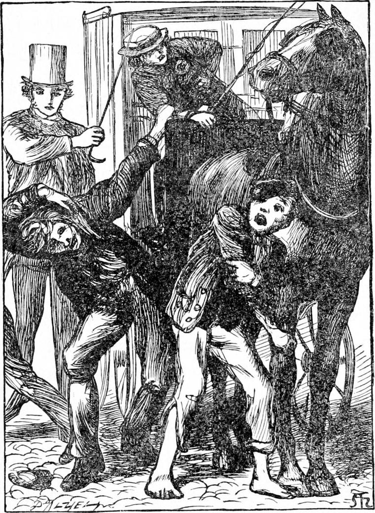
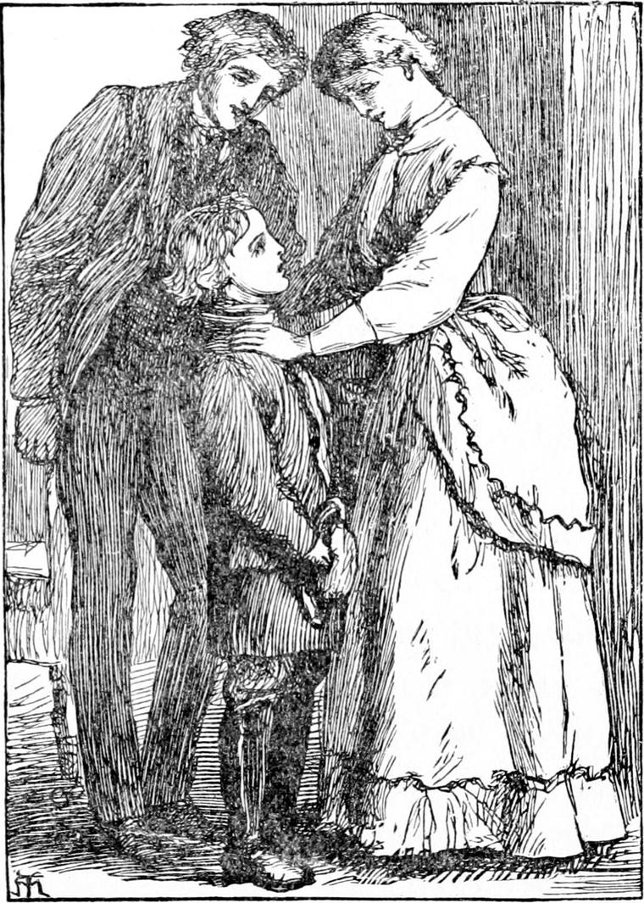

THE next morning Diamond was up almost as early as before. He had nothing to fear from his mother now, and made no secret of what he was about. By the time he reached the stable, several of the men were there. They asked him a good many questions as to his luck the day before, and he told them all they wanted to know. But when he proceeded to harness the old horse, they pushed him aside with rough kindness, called him a baby, and began to do it all for him. So Diamond ran in and had another mouthful of tea and bread and butter; and although he had never been so tired as he was the night before, he started quite fresh this morning. It was a cloudy day, and the wind blew hard from the north—so hard sometimes that, perched on the box with just his toes touching the ground, Diamond wished that he had some kind of strap to fasten himself down with lest he should be blown away. But he did not really mind it.
His head was full of the dream he had dreamed; but it did not make him neglect his work, for his work was not to dig stars but to drive old Diamond and pick up fares. There are not many people who can think about beautiful things and do common work at the same time. But then there are not many people who have been to the back of the north wind.
There was not much business doing. And Diamond felt rather cold, notwithstanding his mother had herself put on his comforter and helped him with his greatcoat. But he was too well aware of his dignity to get inside his cab as some do. A cabman ought to be above minding the weather—at least so Diamond thought. At length he was called to a neighbouring house, where a young woman with a heavy box had to be taken to Wapping for a coast-steamer.
He did not find it at all pleasant, so far east and so near the river; for the roughs were in great force. However, there being no block, not even in Nightingale Lane, he reached the entrance of the wharf, and set down his passenger without annoyance. But as he turned to go back, some idlers, not content with chaffing him, showed a mind to the fare the young woman had given him. They were just pulling him off the box, and Diamond was shouting for the police, when a pale-faced man, in very shabby clothes, but with the look of a gentleman somewhere about him, came up, and making good use of his stick, drove them off.
“Now, my little man,” he said, “get on while you can. Don't lose any time. This is not a place for you.”
But Diamond was not in the habit of thinking only of himself. He saw that his new friend looked weary, if not ill, and very poor.
“Won't you jump in, sir?” he said. “I will take you wherever you like.”
“Thank you, my man; but I have no money; so I can't.”
“Oh! I don't want any money. I shall be much happier if you will get in. You have saved me all I had. I owe you a lift, sir.”

“Which way are you going?”
“To Charing Cross; but I don't mind where I go.”
“Well, I am very tired. If you will take me to Charing Cross, I shall be greatly obliged to you. I have walked from Gravesend, and had hardly a penny left to get through the tunnel.”
So saying, he opened the door and got in, and Diamond drove away.
But as he drove, he could not help fancying he had seen the gentleman—for Diamond knew he was a gentleman—before. Do all he could, however, he could not recall where or when. Meantime his fare, if we may call him such, seeing he was to pay nothing, whom the relief of being carried had made less and less inclined to carry himself, had been turning over things in his mind, and, as they passed the Mint, called to Diamond, who stopped the horse, got down and went to the window.
“If you didn't mind taking me to Chiswick, I should be able to pay you when we got there. It's a long way, but you shall have the whole fare from the Docks—and something over.”
“Very well, sir” said Diamond. “I shall be most happy.”
He was just clambering up again, when the gentleman put his head out of the window and said—
“It's The Wilderness—Mr. Coleman's place; but I'll direct you when we come into the neighbourhood.”
It flashed upon Diamond who he was. But he got upon his box to arrange his thoughts before making any reply.
The gentleman was Mr. Evans, to whom Miss Coleman was to have been married, and Diamond had seen him several times with her in the garden. I have said that he had not behaved very well to Miss Coleman. He had put off their marriage more than once in a cowardly fashion, merely because he was ashamed to marry upon a small income, and live in a humble way. When a man thinks of what people will say in such a case, he may love, but his love is but a poor affair. Mr. Coleman took him into the firm as a junior partner, and it was in a measure through his influence that he entered upon those speculations which ruined him. So his love had not been a blessing. The ship which North Wind had sunk was their last venture, and Mr. Evans had gone out with it in the hope of turning its cargo to the best advantage. He was one of the single boat-load which managed to reach a desert island, and he had gone through a great many hardships and sufferings since then. But he was not past being taught, and his troubles had done him no end of good, for they had made him doubt himself, and begin to think, so that he had come to see that he had been foolish as well as wicked. For, if he had had Miss Coleman with him in the desert island, to build her a hut, and hunt for her food, and make clothes for her, he would have thought himself the most fortunate of men; and when he was at home, he would not marry till he could afford a man-servant. Before he got home again, he had even begun to understand that no man can make haste to be rich without going against the will of God, in which case it is the one frightful thing to be successful. So he had come back a more humble man, and longing to ask Miss Coleman to forgive him. But he had no idea what ruin had fallen upon them, for he had never made himself thoroughly acquainted with the firm's affairs. Few speculative people do know their own affairs. Hence he never doubted he should find matters much as he left them, and expected to see them all at The Wilderness as before. But if he had not fallen in with Diamond, he would not have thought of going there first.
What was Diamond to do? He had heard his father and mother drop some remarks concerning Mr. Evans which made him doubtful of him. He understood that he had not been so considerate as he might have been. So he went rather slowly till he should make up his mind. It was, of course, of no use to drive Mr. Evans to Chiswick. But if he should tell him what had befallen them, and where they lived now, he might put off going to see them, and he was certain that Miss Coleman, at least, must want very much to see Mr. Evans. He was pretty sure also that the best thing in any case was to bring them together, and let them set matters right for themselves.
The moment he came to this conclusion, he changed his course from westward to northward, and went straight for Mr. Coleman's poor little house in Hoxton. Mr. Evans was too tired and too much occupied with his thoughts to take the least notice of the streets they passed through, and had no suspicion, therefore, of the change of direction.
By this time the wind had increased almost to a hurricane, and as they had often to head it, it was no joke for either of the Diamonds. The distance, however, was not great. Before they reached the street where Mr. Coleman lived it blew so tremendously, that when Miss Coleman, who was going out a little way, opened the door, it dashed against the wall with such a bang, that she was afraid to venture, and went in again. In five minutes after, Diamond drew up at the door. As soon as he had entered the street, however, the wind blew right behind them, and when he pulled up, old Diamond had so much ado to stop the cab against it, that the breeching broke. Young Diamond jumped off his box, knocked loudly at the door, then turned to the cab and said—before Mr. Evans had quite begun to think something must be amiss:
“Please, sir, my harness has given away. Would you mind stepping in here for a few minutes? They're friends of mine. I'll take you where you like after I've got it mended. I shan't be many minutes, but you can't stand in this wind.”
Half stupid with fatigue and want of food, Mr. Evans yielded to the boy's suggestion, and walked in at the door which the maid held with difficulty against the wind. She took Mr. Evans for a visitor, as indeed he was, and showed him into the room on the ground-floor. Diamond, who had followed into the hall, whispered to her as she closed the door—
“Tell Miss Coleman. It's Miss Coleman he wants to see.”
“I don't know,” said the maid. “He don't look much like a gentleman.”
“He is, though; and I know him, and so does Miss Coleman.”
The maid could not but remember Diamond, having seen him when he and his father brought the ladies home. So she believed him, and went to do what he told her.
What passed in the little parlour when Miss Coleman came down does not belong to my story, which is all about Diamond. If he had known that Miss Coleman thought Mr. Evans was dead, perhaps he would have managed differently. There was a cry and a running to and fro in the house, and then all was quiet again.
Almost as soon as Mr. Evans went in, the wind began to cease, and was now still. Diamond found that by making the breeching just a little tighter than was quite comfortable for the old horse he could do very well for the present; and, thinking it better to let him have his bag in this quiet place, he sat on the box till the old horse should have eaten his dinner. In a little while Mr. Evans came out, and asked him to come in. Diamond obeyed, and to his delight Miss Coleman put her arms round him and kissed him, and there was payment for him! Not to mention the five precious shillings she gave him, which he could not refuse because his mother wanted them so much at home for his father. He left them nearly as happy as they were themselves.

The rest of the day he did better, and, although he had not so much to take home as the day before, yet on the whole the result was satisfactory. And what a story he had to tell his father and mother about his adventures, and how he had done, and what was the result! They asked him such a multitude of questions! some of which he could answer, and some of which he could not answer; and his father seemed ever so much better from finding that his boy was already not only useful to his family but useful to other people, and quite taking his place as a man who judged what was wise, and did work worth doing.
For a fortnight Diamond went on driving his cab, and keeping his family. He had begun to be known about some parts of London, and people would prefer taking his cab because they liked what they heard of him. One gentleman who lived near the mews engaged him to carry him to the City every morning at a certain hour; and Diamond was punctual as clockwork—though to effect that required a good deal of care, for his father's watch was not much to be depended on, and had to be watched itself by the clock of St. George's church. Between the two, however, he did make a success of it.
After that fortnight, his father was able to go out again. Then Diamond went to make inquiries about Nanny, and this led to something else.